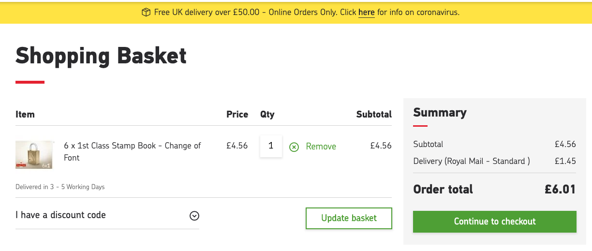

Royal Mail 的时效
Contents
最近一家有钱的大厂给我寄了一封 second class 并告诉我大约三四个工作日送达，然而实际花费八个工作日（含周六不含周日，含投递日不含寄出日）。这么慢是应该的吗？慢了能赔钱吗？
我们知道对于国内信件和小包有常见的 first class 和 second class。通常 first class 次日能够送达而 second class 稍慢一些。但是 Royal Mail 是否给出了保证呢？
Aims to deliver the next working day including Saturdays
👆 Royal Mail 1st Class 的产品页面是这样介绍的。可是这个 “aims” 算什么意思呢？next working day 没有收到怎么处理呢？
If the item hasn’t been delivered by the due date plus 10 working days the sender might be able to claim for compensation.
👆讲解丢件处理的页面是这样讲的。也就是说，虽然我们目标一天送到，但要是花了十一天也只能不好意思一下。
那么能赔多少呢，我们找到了Royal Mail’s retail compensation policy for delay 和 Royal Mail’s retail compensation policy for loss。我们知道所谓的丢包本质上是超时，所谓的 loss 其实也就是更长的 delay。根据这俩 policies：
- First Class aims next working day
- Second Class aims 3 working days
- 超过 aim 三个工作日算 delay
- 超过 aim 十个工作日算 loss
- 如果东西丢了，辅以翔实的价值证明，可以获得照价赔偿，然而 cap 只有 £20。
- 如果东西丢了，辅以一般的价值证明，或者没证据或者东西不值钱或者只是延误，则可以领到大奖半打 First Class 邮票！价值高达 £4.56！包邮送到家，邮资价值 £1.45！合计 £6.01，血赚！

如何才能领到尊贵的邮票呢？我们需要证明东西丢了或者晚了，鬼知道怎么证明。
看起来送慢了 Royal Mail 也不见得能亏出去几张邮票，那邮递员蜀黍兢兢业业地工作是为了什么呢？
原来监管机构 Ofcom 早就注意到了这个问题并且定下了一个小目标：93% 的 first class 和 98.5% 的 second class 需要达到 aim。那么 Royal Mail 做到了吗？根据 Year-end Adjusted Quality Reports 2019-20，Royal Mail 实际做到了 92.6% 和 98.7%。没达到 93% 怎么办呢？赖给 COVID-19，去掉最后两周数据得到 “COVID-19 Adjusted” 结果为 93.0% ± 0.1%，好像还差一点。那么继续赖给 MBORC （Matters Beyond Our Reasonable Control）。怎么赖呢？大概就是遇上车祸了那一车都不算时效了。最后 93.2% ± 0.1%，完美。
19-20 勉强及格，18-19 财年 91.5% 的 first class 成绩就不能赖给 COVID-19 了，于是继续赖给 MBORC，尤其是高速公路维修。但是最后只提高到了 91.9%，于是被被 Ofcom 罚了 £1.5m。
Author SEIAROTg
LastMod 2020-09-28